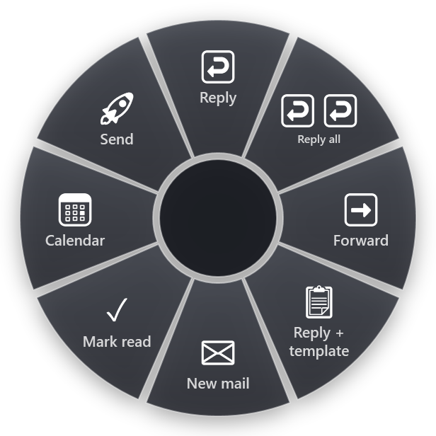

There are two Outlooks on Windows now. Classic Outlook is the desktop program that came with Office for years. New Outlook is the newer app that looks like Outlook on the web. They share most of the everyday shortcuts, but not all of them, which is why some shortcuts seem to stop working after a switch from one to the other.
Every shortcut below is from Microsoft's Outlook keyboard shortcut pages, which list the two versions separately.
The ones that work in both
- Ctrl+R replies.
- Ctrl+Shift+R replies to all.
- Ctrl+F forwards. Note: in Outlook, Ctrl+F is not Find.
- Ctrl+Q marks the message as read.
- Ctrl+U marks it as unread.
- Delete deletes the selected message.
- Ctrl+Z undoes, including a delete or a move.
- Ctrl+1 goes to Mail, Ctrl+2 to Calendar, Ctrl+4 to People.
Learn these eight and you have most of a day's mail handling covered.
Classic Outlook
New items
- Ctrl+Shift+M creates a new message from anywhere in Outlook.
- Ctrl+N creates a new item of the kind you are looking at: a message in Mail, an appointment in Calendar.
- Ctrl+Shift+A creates a new appointment.
- Ctrl+Shift+Q creates a new meeting request.
- Ctrl+Shift+C creates a new contact.
- Ctrl+Shift+K creates a new task.
Handling mail
- Alt+S sends the message you are writing.
- Ctrl+Alt+F forwards the message as an attachment.
- Ctrl+Shift+G opens the flag dialog to set a follow-up.
- Ctrl+Shift+D ignores the conversation.
- Alt H M V opens Move to folder through the ribbon key tips.
Finding things
- Ctrl+E or F3 goes to the search box.
- Ctrl+Shift+I goes to the Inbox.
- Ctrl+Y opens Go to Folder, where you can type the first letters of any folder.
- Ctrl+Shift+B opens the Address Book.
- Ctrl+8 goes to Tasks.
- Shift+F9 sends and receives for the current folder.
New Outlook
New Outlook keeps the shared shortcuts above and adds or changes a few:
- Ctrl+N creates a new message in Mail, a new event in Calendar.
- Ctrl+Enter sends the message.
- Insert flags or unflags the selected message.
- Alt+Q goes to the search box.
What is missing: Microsoft's list for new Outlook has no shortcut for move to folder, archive, forward as attachment or ignore conversation. Those are toolbar buttons or right-click commands in new Outlook.
If your shortcuts feel wrong in new Outlook or Outlook on the web, open Settings > General > Accessibility. The keyboard shortcuts there can follow Outlook, Outlook.com, Yahoo Mail or Gmail, and a different choice changes what the keys do. The list on this page assumes the Outlook set. Shift+? shows every shortcut of the set you have chosen.
Make your own with Quick Steps
Quick Steps are Outlook's built-in way to add shortcuts of your own. A Quick Step is a saved series of actions, such as "move to the Projects folder and mark as read", and each one can get a key of the form Ctrl+Shift plus a number:
- In classic Outlook, Ctrl+Shift+1 to Ctrl+Shift+9.
- In new Outlook and Outlook on the web, Ctrl+Shift+5 to Ctrl+Shift+9.
That fills a real gap in new Outlook: there is no key to move a message to a folder, but a Quick Step for the folder you use most gives you one. We collected Quick Steps examples and their limits in a separate article.
How to remember them
Outlook's shortcuts are short words more than codes:
- R is reply, Shift adds "all". Ctrl+R and Ctrl+Shift+R are a pair.
- F is forward. Once you know Outlook uses F for forward, you stop pressing it to find text.
- Q and U are a pair. Ctrl+Q marks read, Ctrl+U marks unread.
- The number row is the navigation bar. Ctrl+1 Mail, Ctrl+2 Calendar, Ctrl+4 People.
- Ctrl+Shift plus a letter makes something new in classic Outlook: Message, Appointment, Contact, K for task, Q for meeting request.
A good first week: reply, reply all, forward, mark read and Ctrl+1 / Ctrl+2. These are the keys you would otherwise click dozens of times a day.
The rest, on a ring
Some mail work has no shortcut at all, especially in new Outlook: replying with the same text you send ten times a week, attaching a file, showing only unread mail. Quick Steps cover part of it, with five or nine numbered slots that you have to remember.
RadialDeck is the radial menu for Windows that we make. When Outlook is in front, your hotkey opens an Outlook ring: hold, flick toward a slice, let go.

The gallery has 33 Outlook slices. The standard set covers Reply, Reply all, Forward, Reply with a template, New mail, Mark as read, Send, Go to calendar and Go to inbox. Beyond those there are Archive the message, Move to folder…, Show only unread, Attach a file, New meeting, New contact, New task and Search mail from the copied person. There are also separate slices labelled Outlook (new) and Outlook (classic), so each version gets the keys it understands. The Outlook page lists all of them.
Reply with a template is the one people keep: it opens a reply and pastes your text, which covers the "thanks, received, will get back to you" kind of mail in one flick.
Quick reference
- Both: Ctrl+R, Ctrl+Shift+R, Ctrl+F, Ctrl+Q, Ctrl+U, Ctrl+1, Ctrl+2
- Classic only: Ctrl+Shift+M, Alt+S, Ctrl+E, Ctrl+Y, Ctrl+Alt+F, Alt H M V
- New only: Ctrl+Enter, Insert, Alt+Q
RadialDeck is free for two rings and has a 14-day trial of Pro, which adds a ring per program such as the Outlook ring above. It is in the Microsoft Store.
Try it in RadialDeck
Free for two rings, with a 14-day trial of everything in Pro. Windows 10 and 11, from the Microsoft Store.